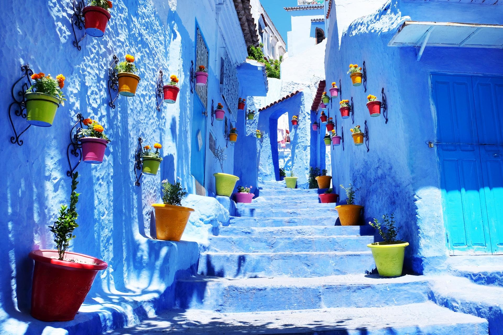

A Cultural Melting Pot
Chefchaouen's culture is a fascinating blend of influences from various civilizations that have shaped the region over centuries. The city's unique character comes from its mix of Berber, Arab, Jewish, and Andalusian heritage.
Historical Influence
Founded in 1471 as a fortress to fight Portuguese invasions, Chefchaouen later became a refuge for Moorish and Jewish exiles from Spain during the Reconquista.
Linguistic Heritage
The local dialect incorporates Spanish words, reflecting the influence of Andalusian refugees and the later Spanish occupation of northern Morocco.
Today, while embracing modernity and welcoming visitors from around the world, Chefchaouen maintains its authentic cultural traditions with pride. This cultural diversity is evident in everything from the architecture and cuisine to music and traditional crafts that make Chefchaouen so distinctive.
Cultural Influences
Cultural Elements
Traditional Clothing
The traditional dress of Chefchaouen reflects both practical mountain living and cultural heritage:
Djellaba
A long, loose-fitting outer robe with full sleeves, often made of wool for the mountain climate. In Chefchaouen, they are commonly blue or neutral-colored.
Mendil
Colorful woven cloths worn by women as head coverings, often featuring intricate patterns and bright colors that contrast beautifully with the blue surroundings.
Rif Hat
The distinctive straw hat with colorful pom-poms worn by men in the Rif region. These hats protect from the sun while working outdoors.
Handwoven Textiles
Clothing often features intricate handwoven patterns unique to the region, showcasing the skilled craftsmanship passed down through generations.

A woman wearing traditional Riffian attire with colorful embroidery

Traditional tagine, a slow-cooked stew served in a conical clay pot

Colorful spices in the local market add flavor to regional dishes

Mint tea, known as "Moroccan whiskey," is an important part of hospitality
Cuisine
Chefchaouen's cuisine combines Moroccan staples with local mountain ingredients and Andalusian influences:
Tagine
Slow-cooked stews with local vegetables, herbs, and meats in a distinctive conical clay pot.
Goat Cheese
The region is famous for its fresh, tangy goat cheese made from the milk of local mountain goats.
Olive Oil
Locally produced and used abundantly in cooking, Chefchaouen olive oil is prized for its flavor.
Mountain Herbs
Wild herbs from the Rif Mountains add distinctive flavors to regional dishes.
Baissara
A hearty fava bean soup popular in the region, especially during cooler months.
Mint Tea
The national drink, often prepared with local mint varieties and served with abundant sugar.
Try a Local Recipe: Chefchaouen Tagine
Music and Dance
The musical traditions of Chefchaouen reflect its diverse cultural heritage:
Andalusian Music
Classical music brought by refugees from Spain in the 15th century. This sophisticated tradition features complex rhythms and melodies performed by orchestras.
Jebli Music
Traditional mountain music with distinctive rhythms and melodies that tell stories of rural life, love, and nature. A cornerstone of local identity.
Traditional Instruments
Include the oud (stringed instrument), rebab (bowed string instrument), bendir (frame drum), and kamenjah (violin). Each adds unique tones to local music.
Ahidous
A traditional Berber circle dance performed at celebrations. Participants form a circle, moving rhythmically while singing collective poems.

Musicians performing traditional music with local instruments

Artisans create intricate designs in the traditional workshops of the medina
Crafts and Artisanship
Chefchaouen is renowned for its skilled artisans who create distinctive handicrafts:
Festivals and Celebrations
Throughout the year, Chefchaouen comes alive with various cultural celebrations that showcase local traditions
Yennayer (Berber New Year)
Celebrated in January, this ancient tradition marks the agricultural new year. Families prepare special meals featuring traditional dishes like couscous with seven vegetables, and there are community celebrations with music and dance.
Moussem of Sidi Ali Ben Hamdouch
This annual pilgrimage and festival honors a local saint. Pilgrims from across Morocco gather for prayers, music, and communal meals. The event showcases traditional Jebli music and dance performances, offering a window into spiritual practices of the region.
Eid al-Fitr
The celebration marking the end of Ramadan is a major event in Chefchaouen, with families gathering for feasts, exchanging gifts, and visiting friends and relatives. The city is decorated with lights, and special sweets like chebakia and sellou are prepared for the occasion.
Chefchaouen Arts Festival
A celebration of local arts and culture featuring music performances, art exhibitions, and cultural workshops. The festival attracts artists and visitors from across Morocco and internationally, showcasing the city's artistic heritage against the backdrop of its blue streets.
Independence Day
November 18th commemorates Morocco's independence from France. In Chefchaouen, the day is marked with parades, music performances, and cultural exhibitions celebrating Moroccan heritage. Buildings are decorated with Moroccan flags, and there's a festive atmosphere throughout the city.
Daily Life in Chefchaouen

Locals going about their daily activities in the blue streets of the medina
A Day in the Life
Life in Chefchaouen moves at a relaxed pace, with daily routines centered around family, work, and community:
Morning
The day begins with the call to prayer from the city's mosques. Locals visit the daily markets (souks) to purchase fresh produce, bread, and other necessities for the day ahead.
The morning markets are bustling with activity, as vendors set up their stalls with fresh fruits, vegetables, herbs, and bread.
Midday
Many residents work in traditional crafts, with workshops often passed down through generations. The main meal of the day is usually eaten at lunchtime, followed by a short rest period during the hottest hours.
Artisan workshops are alive with activity as craftspeople create textiles, leather goods, and woodwork using traditional techniques.
Afternoon
Afternoons often include time at local cafés, where residents gather to socialize over mint tea. This is a time for conversation, catching up on news, and perhaps playing cards or board games.
The ritual of tea preparation and sharing is an important social custom that brings people together.
Evening
As temperatures cool, families often take evening walks through the medina or along the river. Dinner is typically eaten later in the evening, and nights are spent with family at home or meeting friends in the plaza.
The main square, Plaza Uta el-Hammam, comes alive in the evening as both locals and visitors enjoy the cooler temperatures.
Test Your Knowledge
How much have you learned about Chefchaouen's culture? Take this fun quiz to find out!
1. What is the traditional outer robe worn in Chefchaouen called?
Your Results
Thanks for taking the quiz!
Experience the Culture of Chefchaouen
Book a cultural tour and immerse yourself in the rich traditions, cuisine, and crafts of the Blue Pearl with our knowledgeable local guides.
Culinary Experiences
Learn to prepare traditional Moroccan dishes with local ingredients and ancient techniques.
Learn MoreArtisan Workshops
Visit local craftspeople and learn traditional weaving, pottery, and leatherwork.
Learn MoreHome Visits
Experience authentic Moroccan hospitality with a meal in a local family's home.
Learn More